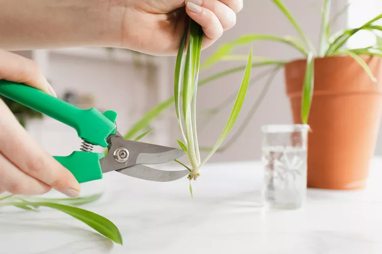
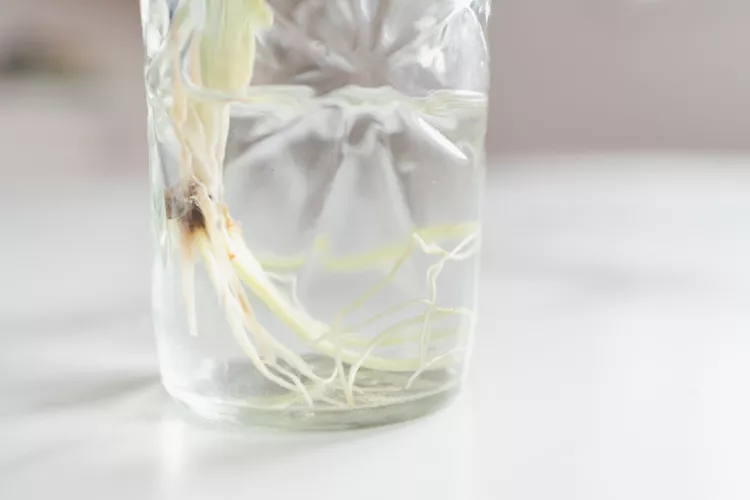
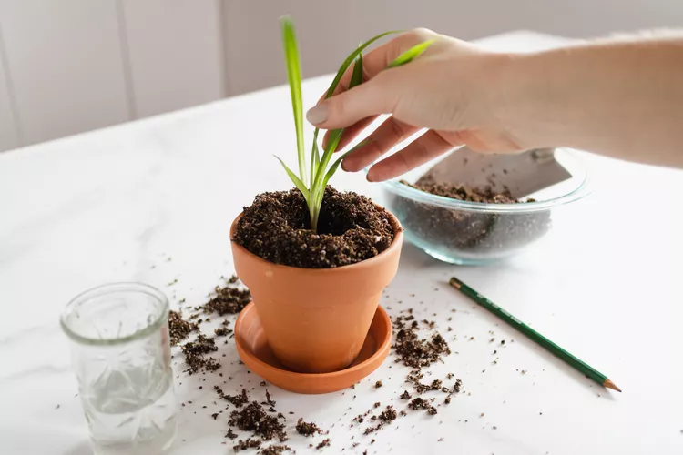

A spiderplant is a very easy to care for houseplant. If it has reached the stage where you can start to propogate the plant, follow these simple steps.
Carefully cut a part from the stolon from the mother plant where you can see roots forming.
Add your cutting to a glass of water and place the glass in direct sunlight. Wait until the roots have grown into a cluster before going to the next step.
Provide a hole in the soil of your pot. Place the plant in its new home. Place it in indirect sunlight and let it take root.
The new spider plants can brighten your home or make an excellent gift for friends or family!